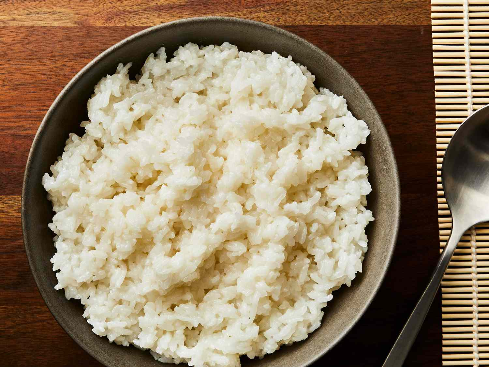

Sushi Rice

Description
Sushi rice is less of a type of rice than it is a preparation method. It's cooked short-grain white rice combined
with rice vinegar and other ingredients, cooled completely, and then used to make sushi rolls.
Ingredients
-
2 cups uncooked glutinous white rice (sushi rice)
-
3 cups water
-
½ cup rice vinegar
-
1 tablespoon vegetable oil
-
¼ cup white sugar
-
1 teaspoon salt
Steps
- Gather all ingredients.
-
Rinse the rice in a strainer or colander under cold running water until the water runs clear.
- Combine rice and water in a saucepan over medium-high heat and bring to a boil. Reduce heat to low, cover, and
cook until rice is tender and all water has been absorbed, about 20 minutes. Remove from stove and set aside until
cool enough to handle.
- Meanwhile, combine rice vinegar, oil, sugar, and salt in a small saucepan over medium heat. Cook until the sugar
has dissolved. Allow to cool. Then stir into the cooked rice. While mixture will appear very wet at first, keep
stirring and rice will dry as it cools.
- Then stir into the cooked rice. While mixture will appear very wet at first, keep stirring and rice will dry as
it cools.
-
Enjoy!
Home